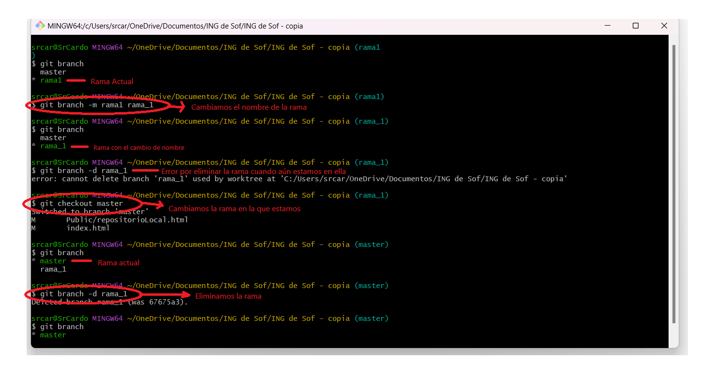
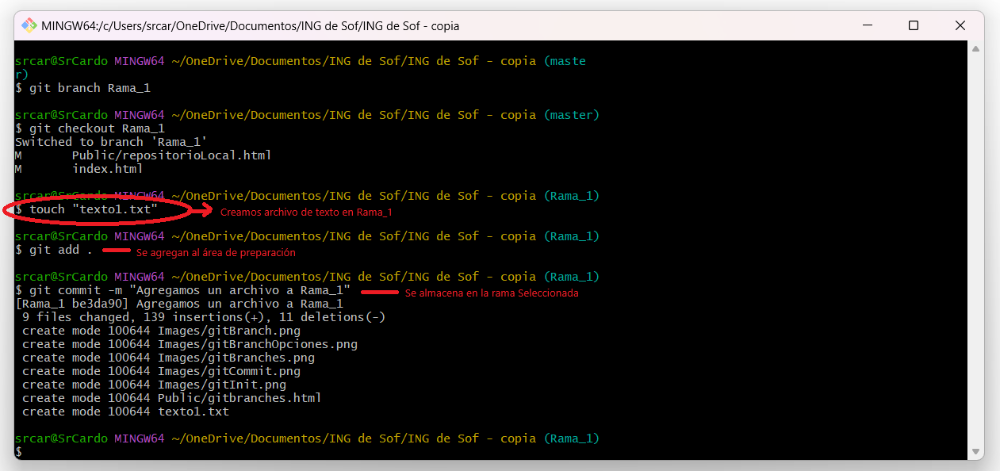
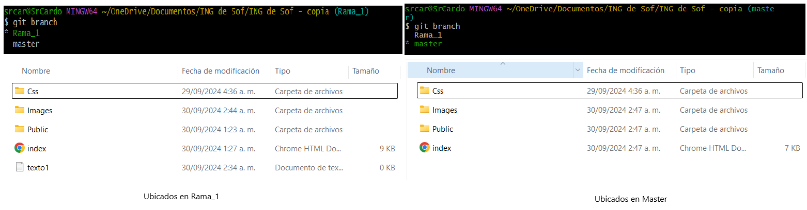
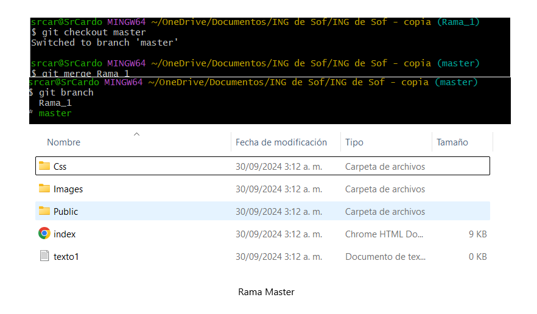

Los repositorios remotos son versiones de tu proyecto que están hospedadas en Internet o en cualquier otra red.
1. Para empezar debemos tener ya creado nuestro repositorio local.
2. Una vez creado, vamos a GitHub y creamos un nuevo repositorio.

ING Software y Datos
◉ Adicional podemos cambiar el nombre de la rama con el comando git branch -m nombreActual NombreNuevo.
◉ O eliminar una rama, git branch -d nombreRama.
Nota: Para eliminar una rama, NO podemos estar sobre la misma.


Ejemplos:
Para este ejemplo vamos a crear un archivo de texto en la rama que creamos (Rama_1), usando el comando touch "texto1.txt".
Luego vamos a usar el comando git add ., para agregar todos los cambios al área de preparación y ejecutamos un git commit -m "", para almacenarlo en la rama seleccionada del repositorio actual.
Como se puede apreciar en la imagen en la rama Master no contiene el archivo que creamos, pero si la rama Rama_1.


Merge
Permite tomar las líneas independientes de desarrollo creadas por git branch e integrarlas en una sola rama.
Nos paramos en la rama Master y luego ejecutamos el comando git merge nombreRama, esto para que la información sincronice en ambas ramas.